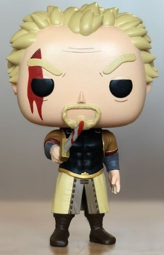
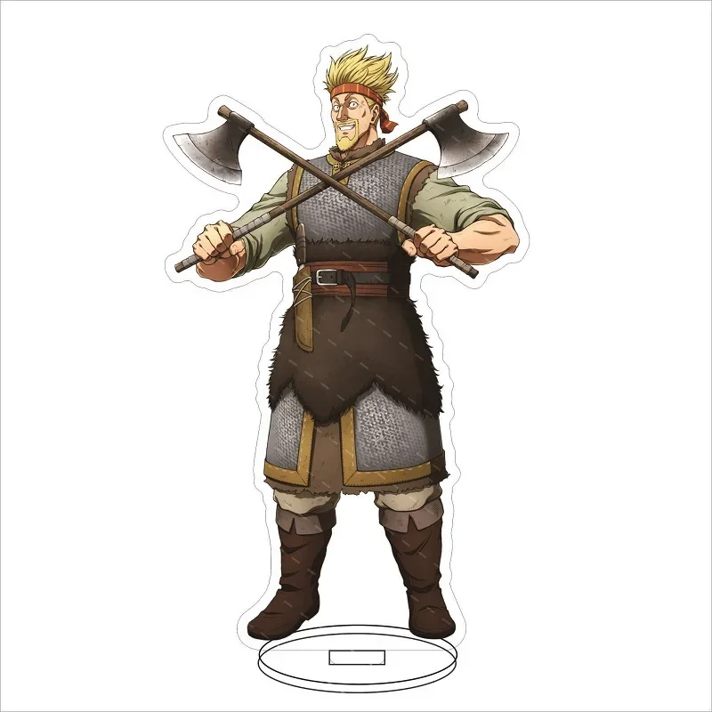
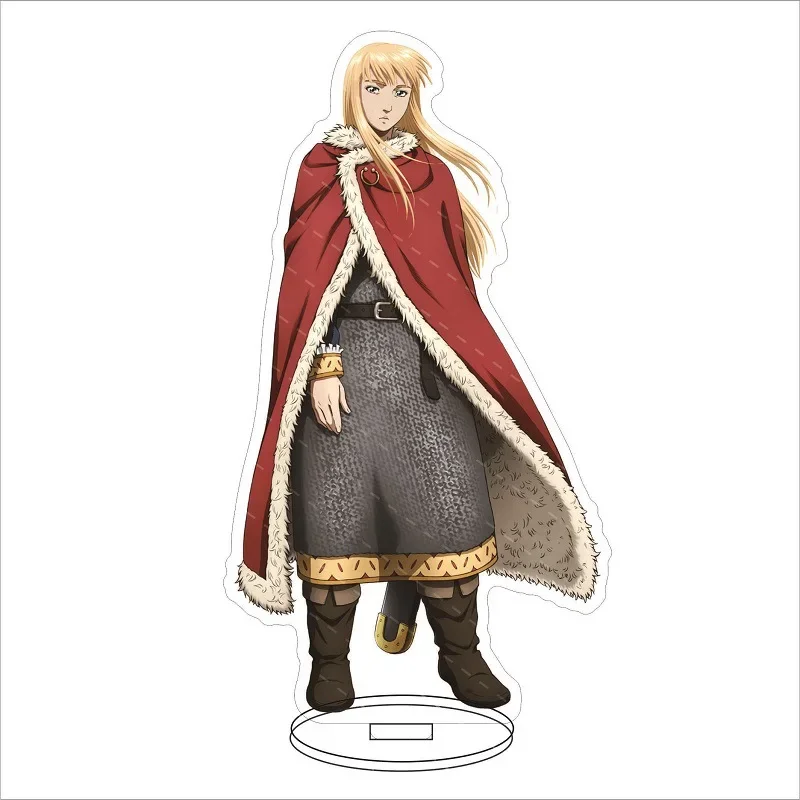

Макет сайта-магазина по мульт-сериалу "Vinland Saga" *не для коммерческого использования*
!Представляем наш ассортимет фигурок разных персонажей!
У нас есть есть следующие герои:
Торфинн Карлсефни
Акриловая Фигурка - Торфинн
Акриловая 2D фигурка с изображением главного героя сериала - Торфинна Карлсефни Цена: 800 руб.
Экшен-Фигурка - Торфинн
Полноценная экшен-фигурка, сделанная из АБС-пластика, можно ставить в любые позы. Изображает главного героя сериала - Торфинна Карлсефни Цена: 1400 руб.
Аскеладд
Акриловая фигурка - Аскеладд
Акриловая 2D фигурка с изображением главного антигероя сериала - Аскеладда Цена: 800 руб.
Funko Pop фигурка - Аскеладд

Мини-фигурка Funko Pop выполненная из АБС-пластика, изображает главного антигероя сериала - Аскеладда Цена: 1100 руб.
Торкель Длинный
Акриловая фигурка - Торкель Длинный

Акриловая 2D фигурка с изображением второстепенного антагониста сериала - Торкеля Длинного Цена: 800 руб.
Диорама - дуэль Торкеля и Торфинна
Полноценная диорама, изображающая дуэль протагониста Торфинна с его двоюродным дедом Торкелем Длинным Цена: 3250 руб.
Принц Кнуд
Акриловая фигурка - Принц Кнуд

Акриловая 2D фигурка с изображением второстепенного героя сериала - принца Кнуда Цена: 800 руб.